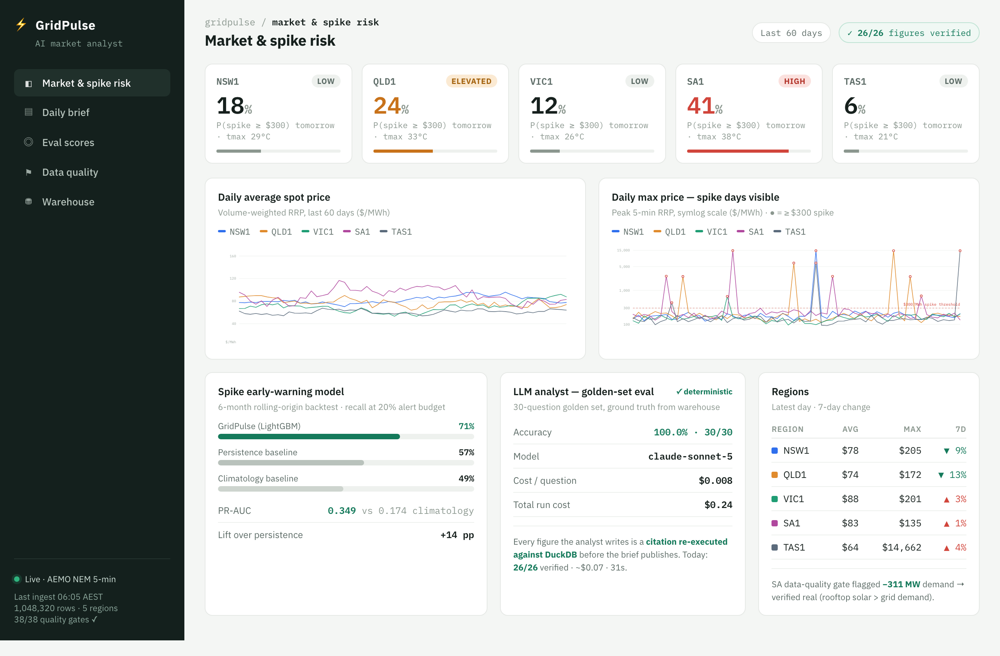
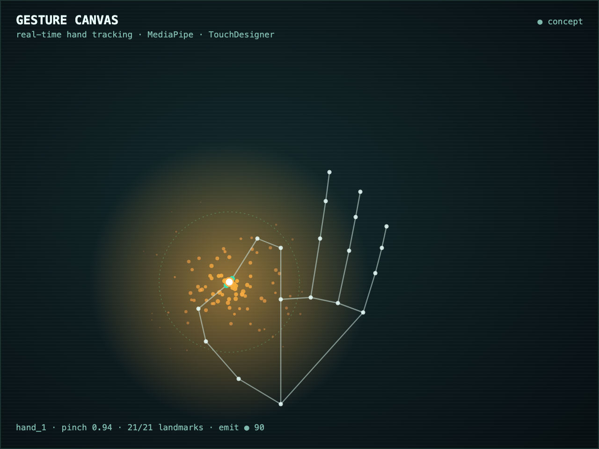

DATA SYSTEMS
THAT PROVE
THEIR OWN NUMBERS.
Final-year Data Science & Business student at QUT. I build analytics systems where every figure is re-verified against source provenance before publication. No magic numbers—just measurable, reproducible results for high-stakes decision makers.
Spike-day recall @ 20% alert budget
6-mo backtest vs 58% baseline
LLM Golden-set evals passed
Deterministic scoring · $0.008/question
Global Kaggle finish
Best result · ~3,500 entrants
Rows live market data
AEMO NEM 5-min feed · refreshed daily
Selected_Evidence_Logs
3 PROJECTS_FOUNDGridPulse: Energy Market AI
Real-time analysis system for the Australian National Electricity Market (NEM).
Problem_Statement
NEM price spikes are sudden and opaque, causing millions in retail exposure for small players without quant tools.
Solution_Build
DuckDB pipeline ingesting 1M+ rows of 5-min AEMO data (38 quality gates), a LightGBM spike-risk model, and an LLM analyst whose every citation is re-executed against the database before a brief publishes.
| Metric | Measured | Method | |
|---|---|---|---|
| Spike_recall | 71% | @20% alert budget, 6-mo rolling-origin (vs 58% baseline) | |
| Citations_verified | 26/26 | Re-executed against DuckDB before publish |

Gesture Canvas: CV + LLM
Real-time hand-tracking interface that directs generative visuals via LLM prompting.
Problem_Statement
Letting a language model drive a live visual raises one question: how do you stop a bad model response from ever reaching the output a person is watching?
Solution_Build
MediaPipe hand tracking in TouchDesigner drives generative visuals; natural-language scene direction sits behind a strict JSON schema gate — every LLM response is validated before it touches the render.
| Metric | Measured | Method | |
|---|---|---|---|
| Pinch_detection | 531/531 | Calibrated on 1,847 frames · 0 false-positives across 5,400+ | |
| Bad_frames_to_render | 0 | Schema gate rejects before render · 31 tests green in CI |

Business Intelligence Capstone
Operational efficiency project for local enterprise partner.
Problem_Statement
The client’s data pipeline was silently unreliable, and their reporting burned a full working day of manual effort each cycle.
Solution_Build
Diagnosed the pipeline’s flaws and rebuilt it to process ~60,000 records reliably, then built an executive dashboard that replaced the manual reporting day with a live view.
| Metric | Measured | Method | |
|---|---|---|---|
| Reporting_time | 1 day → mins | Live exec dashboard replaced manual cycle | |
| Result | Distinction | QUT IAB303, graded |
Confidential_client_build
[no public screenshot]
OPERATING
PRINCIPLES
Ver_1.0.4_Stable
Verify before publishing
Every metric shown must include its measurement methodology. If it can't be proven, it shouldn't be presented.
Business question first
Models aren't the goal. Solving the ROI question, the churn cause, or the market risk is the goal.
Honest baselines
High accuracy is meaningless without comparison to a simple heuristic or a previous standard.
Expertise_Profile
I approach data through the dual lens of engineering rigour and business logic. My background in entrepreneurship ensures that the systems I build are aligned with organizational value, while my data science training ensures they are robust.
Languages_&_Core
ML_&_Frameworks
Analytics_BI
Milan Shaji
Researcher / Engineer / Analyst
Historical_Logs
Queensland University of Technology
2022 - 2026Bachelor of Data Science + Bachelor of Business
Universal Store — Sales Associate
2023 - PresentHigh-volume retail alongside a full dual-degree load · consistently 15–20% over target